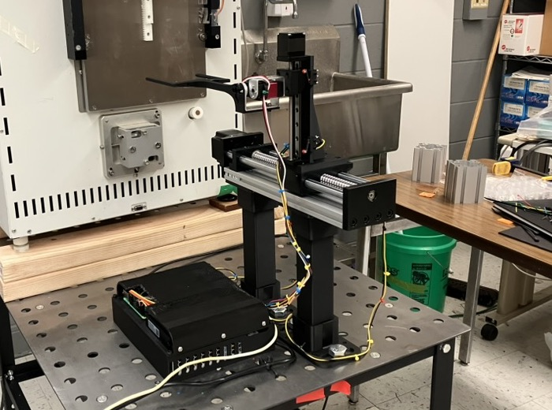
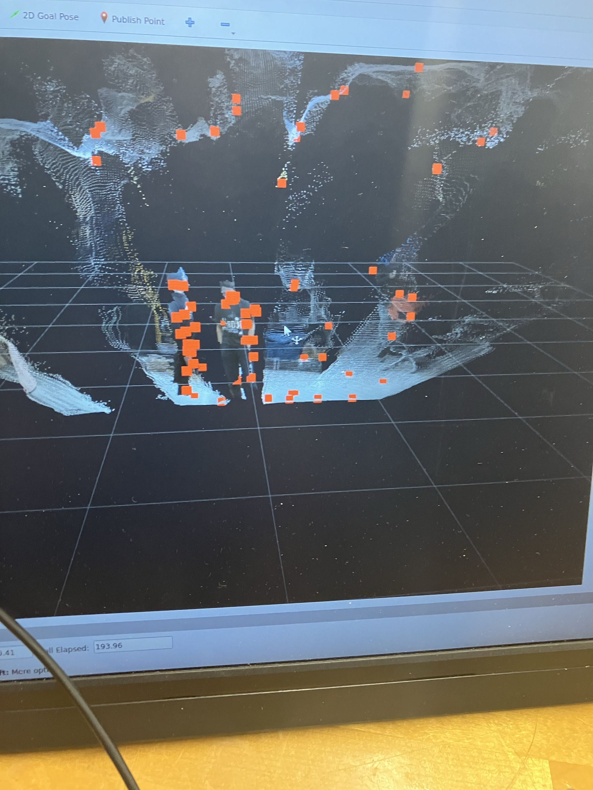
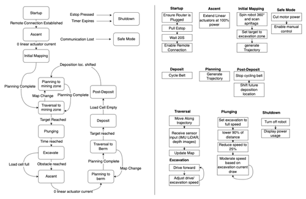
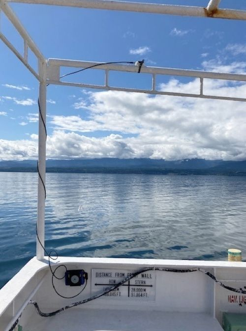
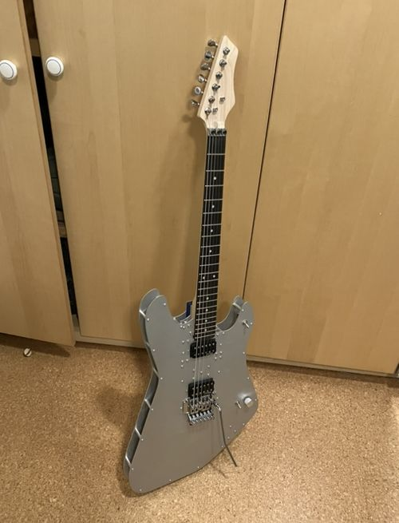
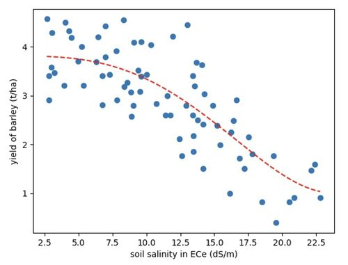
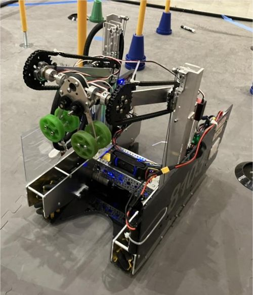
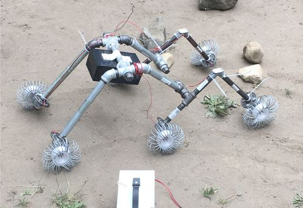
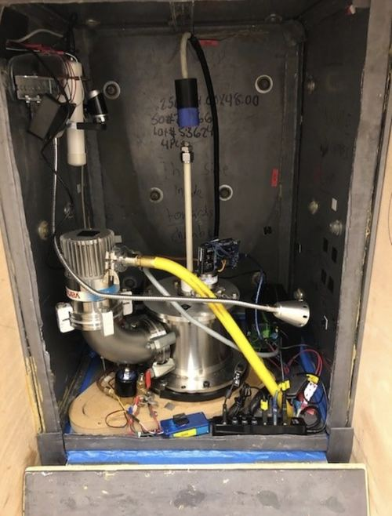
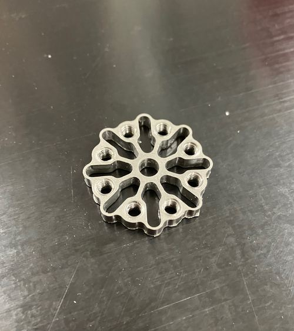

Designed, fabricated, and tested a 3-axis stepper-driven gantry for automated biological sample handling in Prof. Euiwon Bae’s research group.

Led the Purdue VFS software and autonomy team to develop a real-time visual obstacle detection system for autonomous drones, tracking obstacles in stereo-camera feeds for our GoAERO Prize entry.

Led Systems Engineering for Purdue Lunabotics, documenting system architecture, operational scenarios, and requirements to guide design and development.

Engineered and 3D-printed a custom GPS mount for ship rail installation, designed for a captain’s specific use case and secure fastening on marine hardware. Still in active use.

Designed and built an ergonomic electric guitar body from three laser-cut aluminum plates, with modular electronics mounting for simplified servicing.

Built a Python library for tree-based genetic programming, applying evolutionary algorithms to symbolic regression to derive closed-form equations from experimental data.

Led fabrication engineering for 4 years in FIRST Tech Challenge, machining drivetrain components and custom mechanisms under competition timelines.

Designed and fabricated a rocker-bogie rover inspired by NASA’s Mars Curiosity architecture, with airless coil-spring wheels tested across varied terrain.

Contributed to a working inertial confinement fusion reactor, working on high-voltage system design, documentation, and radiation shielding at 40+ kV.

Designed and machined custom compliant shock absorbers and couplers for FTC robot drivetrains, selecting materials by stiffness and impact-absorption needs.
All repositories →